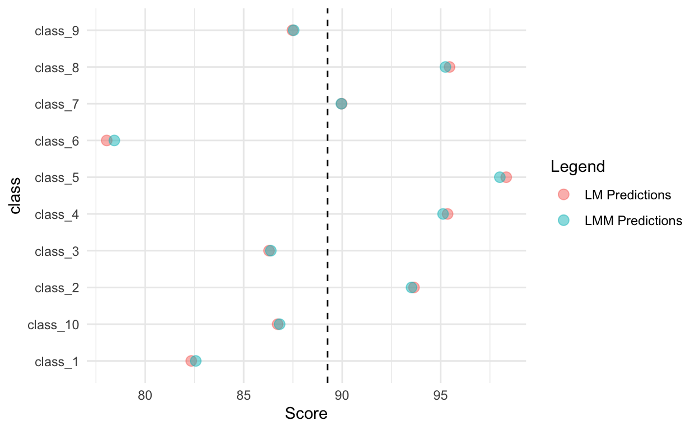
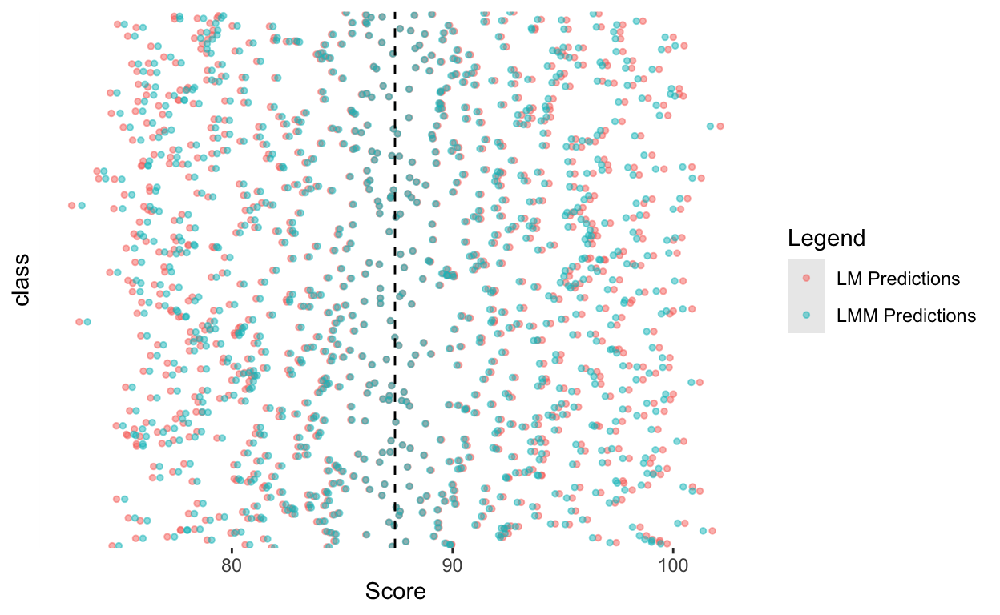
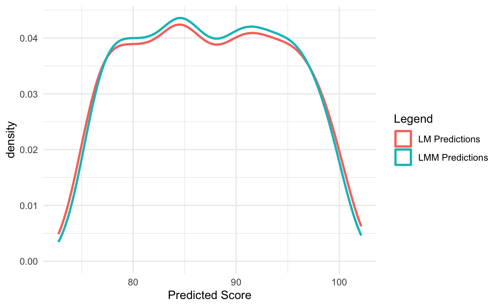

Introduction
On this web page you will find the homework, practical exercises and weekly quiz for Unit 11 of BIO144.
All other information for the course is on the OLAT course webpages, and web pages linked to from there: OLAT BIO144 Info. Hub
Homework
All homework is for your own practice and learning. It will not be marked or graded.
Homework common to all weeks
Review the material from the lecture(s) this week. Make sure you understand the concepts and ideas presented. Ensure you can follow any mathematical or statistical explanations. Ensure you can do the R that is needed for the week’s learning objectives.
When you find things you don’t understand or have trouble doing (e.g., in R), make a note of these. You can then ask a teaching assistant (TA) for help during the practical session, and you can ask on the Discussion Forum on OLAT. You can also ask questions during the lectures.
Homework specific to this week
There is a very nice and (relatively simple) walkthrough by Dr Bodo Winter, a lecturer in cognitive linguistics at the University of Birmingham UK, of concepts underlying linear mixed effects models. It provides a (slightly) different perspective from those in Prof. Petchey’s lecture. It also very clearly walks through an example in R. Here is the tutorial.
For a somewhat more advanced treatment of LMMs and some of examples of implementing them in R, please have a look at Chapter 10 of The New Statistics with R by Hector.
The analytic world
Here are a series of videos recorded some time ago by Prof. Petchey, showing a small part of the world of analytical methods. Its not really important that you watch all this now, but you might find it interesting. Perhaps skip to the end and watch the last one first, so you see the whole world and then decide what parts you want to explore further. (And during the final lecture of the course, you heard about even more of this world.)
Practical part 1
In the lecture and course book there were various examples and walkthroughts of linear mixed effects models (LMMs). In this practical you will experience a core feature of LMMs: the partial pooling of information across groups. This is one of the key features that distinguishes LMMs from standard linear models (LMs). It is important to understand this feature well, as it is central to the correct use and interpretation of LMMs.
Partial pooling aross groups means that the estimates for each group are “shrunk” towards the overall mean. The amount of shrinkage depends on the amount of data available for each group and the variability within and between groups.
Let us break this down into steps.
First, simulate some data with a grouping structure. For example, you could simulate test scores for students in different classrooms, where each classroom has a different average score.
Here is the data we have simulated:
Check the number of students per class:
Now over to you. Make a script, copy and paste the code above so you have the dataset.
Then make a standard linear model with the intention to predict student scores based on class.
Make a dataset that contains the means of each class from the linear model.
And now just calculate the mean score in each class with dplyr:
You should see that the predicted means from the linear model and the calculated means are identical. The linear model is simply estimating the mean score for each class independently.
This is exactly what we expect from a standard linear model. The standard linear model treats the class as a fixed effect, estimating a separate mean for each class without sharing information across classes.
Now, let’s fit a linear mixed effects model (LMM) to the same data, treating class as a random effect. This means that the model will estimate an overall mean score and allow each class to deviate from this mean.
Now, make predictions from the LMM for each class
Partial pooling means that the estimates for each class are “shrunk” towards the overall mean. The amount of shrinkage depends on the amount of data available for each class and the variability within and between classes.
Let’s visualise this effect by plotting the predictions from both models against the calculated class means.

What do you think would happen if we simulate 1’000 classes instead of 10? Try it out if you like. You should see the same pattern, but more pronounced.

I love it!!! This is art that tells a story about data and models! Please make a t-shirt with this plot!!!
And here are the distributions of the predictions from the two models:

Think about how the same might apply in a random slopes model, where each group has its own slope. The same principles of partial pooling apply, with group-level slope estimates being shrunk toward the overall slope.
Should class be a random effect or a fixed effect? It depends on your research question and the context of your study. If you are interested in making inferences about the specific classes in your dataset, treating class as a fixed effect may be appropriate. However, if you want to generalize your findings to a larger population of classes, treating class as a random effect is often more suitable.
Another way to think about this is how we are identifying (naming) the classes. If the names are arbitrary labels (e.g., class_1, class_2, etc.) that do not carry specific meaning, it is often more appropriate to treat class as a random effect. If instead of class names we had meaningful categories (e.g., different teaching methods), then treating that factor as a fixed effect would make more sense. Then it would be appropriate to make a mixed model with teaching method as a fixed effect and class (name) as a random effect.
Practical part 2
The sleepstudy reaction time dataset is a particularly rich dataset to explore if you want to strengthen your understanding of linear mixed-effects models. Attempt this practical when you are feeling particularly motivated to understand LMMs better. And note that it is quite brief in description, but quite involved in terms of analysis :) You got this!
Get the dataset into R with the following code:
library(lme4)
data(sleepstudy)Start by plotting reaction time against days of sleep deprivation for each subject to see how individuals differ in both their baseline reaction times and their sensitivity to sleep loss.
Next, fit a simple linear model that ignores subject identity and compare it to mixed-effects models that include subject as a random intercept, and then as both a random intercept and a random slope for days. As you do this, pay attention to how the estimated fixed effects change, how the residual variance is reduced, and how partial pooling affects individual-level intercepts and slopes.
Also examine how the degrees of freedom and p-values differ between models, and reflect on why these change when the dependence among observations is correctly accounted for.
Working through these steps will help you understand not only when linear mixed models are needed, but how their structure influences estimation, uncertainty, and statistical inference.
Practical part 3
The second part of the lecture was about what types of statistical methods might be used for questions and datasets we did not encounter during the course. There is no practical exercise for this part, but please do read the relevant sections in the course book and lecture notes.
Weekly Quiz